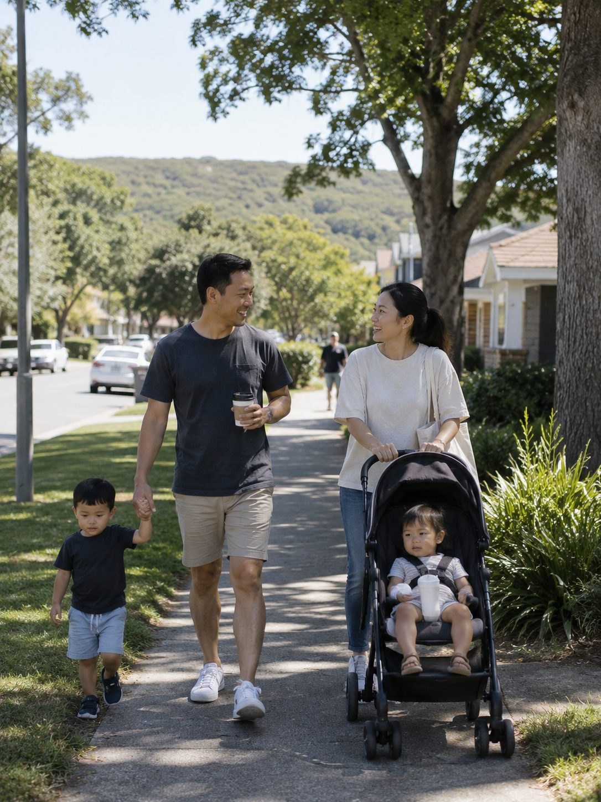

Moving with
your family
Partner work, childcare, schools, the journey and moving on your own.
The questions to settle first
The questions behind it
Ethicare is a recruitment agency, not a registered migration agent; none of this is immigration, tax or financial advice. Confirm the current position with the Department of Home Affairs and the schools.
Can my partner work?
Partners are usually secondary applicants, so their work rights follow from the visa they are granted, not from a job offer.
Their own visa grant
Change route, temporary to permanent, and their rights change with it. Read the conditions on the visa granted.
A separate question entirely
Regulated professions go through the Australian regulator or assessing authority for that field; employers judge everything else. Start early.
Budget the first months on one income
Job-hunting while unpacking and enrolling children takes time.
Two registrations, two timelines
Theirs may be the longer one. Run both from the start, or the family arrives months apart. Check their pathway alongside yours.
What to settle before you accept
Ask the employer which visa they intend to sponsor, its conditions, and what support extends to a partner.
Visa conditions are set by the Department of Home Affairs. See also visas and immigration.
Childcare
Learn the names
Long day care covers the working day. Family day care is a smaller setting in an educator’s home. Preschool and kindergarten are the year or two before school, run by each state under its own name and rules.
Join waiting lists before you fly
List from overseas as soon as you have a suburb in mind, at more than one centre.
Check the subsidy against your own visa
Fees are quoted per day. The Child Care Subsidy reduces what eligible families pay, but many families on a temporary visa (including the 482) do not qualify and pay full fees.
Test it against a clinical roster
Ask about the earliest drop-off, the latest pick-up and what happens when you are held past handover. A nanny share or family day care often covers the gap.
Sources: Child Care Subsidy (Services Australia) for eligibility and rates; your state education department for preschool; our education guide for childcare and schools and education for enrolment, catchments and fees.
Moving as a single parent
Consent to take a child abroad
Where someone else holds parental responsibility, you will generally need their written consent or a court order. It can be asked for twice: by the visa application, and by an airline or border officer. Carry certified copies in hand luggage.
- Full birth certificates showing both parents, not the short form.
- Any parenting or custody orders, certified.
- A signed consent letter with the other parent’s contact details, or evidence of sole parental responsibility.
- Where a parent has died, the death certificate.
- Immunisation records and medical notes.
Childcare is the line that decides it
Work the numbers on your own salary with care at full price.
Build the network before you need it
Before and after-school care, holiday programmes, a neighbour, one colleague who will swap a shift.
Negotiate it before you accept
Nights, weekends and on-call are different without another adult at home. Say so at offer stage.
Longer than in many school systems
The summer break falls over Christmas and holiday programmes book out early. Check your state’s term dates before planning leave.
Consent and documentation requirements are set by the Department of Home Affairs.
Preparing the children for the move
Talk it through, often
Look at photos, maps and videos together and let them ask questions as often as they need.
Picture the new life
Find the local beach, park or pool online, and their school’s website.
Let them say farewell
A small party, a memory book, swapping addresses.
Keep one comfort close
A favourite toy or blanket travels in hand luggage, never the hold.
Plan to stay connected
Grandparents and friends are a video call away.
Involve them in packing
Older children choose some of their own things to bring.
Sort documents & health
Passports, visas and copies of immunisation records, medical notes and prescriptions in hand luggage. Check biosecurity rules before you pack.
Surviving the long flight
Usually 20 to 24 hours with a stop somewhere.
Consider a stopover
A night in the Gulf, Singapore, Hong Kong or Kuala Lumpur splits one long trip into two.
Tell the airline early
Request bassinets, children’s meals and seats together when you book. Use family boarding.
Pack a bag of surprises
Snacks, headphones, downloaded shows, small wrapped activities.
Dress for sleep
Familiar pyjamas signal bedtime; layers cope with cabin temperatures.
Ease little ears
Feed, drink or chew during take-off and landing. Pack spare nappies, wipes and clothes.
Go gently on jet lag
Daylight and fresh air help. Expect odd-hour wakings for a week or so.
Mind the biosecurity gate
Declare any food and do not pack fresh produce.
The first 48 hours
Rest & hydrate
Sleep. In the heat, water, sunscreen and shade for the children.
Find the everyday
The local supermarket, park or beach makes the new place feel ordinary.
Recreate small routines
The familiar bedtime story, the same breakfast, the favourite cup.
The first few weeks
Get into school soon
Routine and friends are the fastest cure for homesickness. Our education guide covers enrolment, including the parts that depend on your visa.
Say yes to invitations
Playdates, parties, Nippers at the surf club, weekend sport: this is where friendships form, for parents too.
Expect the wobble
A few weeks in, the novelty fades and missing home arrives, for children and adults. Keep routines steady; it passes, though teenagers may need longer. If you are struggling more than seems normal, talk to your GP, a helpline, or us.
Choosing where to live, with the family in mind
Cities offer the widest choice of schools and classmates from every background, so a child who is a visible minority is one of many. Country towns and the outback are gentler and often warm, with less diversity and fewer services; a child may be one of very few from their background.
In most states a government school place is tied to your address through a catchment zone, so research schools before choosing a rental. Our community guide covers how diversity changes by place.
Once you are applying through us, we talk this through with you: ages, priorities, suburbs, school zones and commutes.
Settling, age by age
The portable ones
0–4The easiest to relocate: their world is you. Protect sleep and feeding routines.
The fast adapters
5–11Outdoor, sporty classrooms make friends easy to find, though every child is different.
The ones to watch
12–13Help them keep old friendships while encouraging clubs that build new ones.
The ones who need a say
14+Bring them into decisions, take homesickness seriously, mind how the senior-school years (and the ATAR) line up, and allow a term or two before judging.

I’ve sat with so many parents who lay awake over whether they’re doing right by their children. What I’ve seen, again and again, is that the kids are usually fine, often more than fine, and within a term this is home. Look after yourselves as carefully as you look after them, and choose where you live with the whole family in mind.
SophieFounder, Ethicare Resourcing
Related guides
Moving the whole family?
Tell us who is coming with you and where you are thinking of settling.
Ethicare Resourcing · your guide to a life and career in Australia.